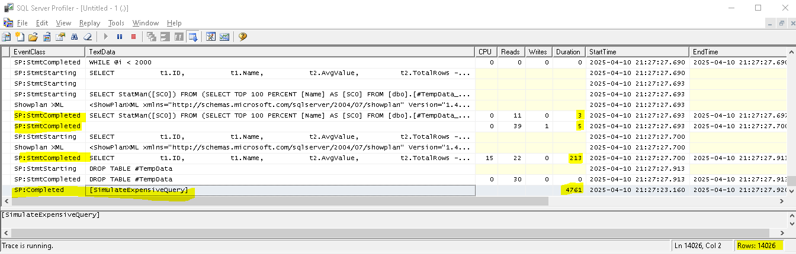

This set up demonstrates troubleshooting a stored procedure with performance issues.
- Open SQL Server Profiler and connect to your SQL Server instance.
- Create a New Trace
- Click File > New Trace.
- Enter a Trace Name (e.g., "SP_Performance_Trace").
- Select a Trace Template
- Choose a template - select Standard.
- Click Save to File (optional, for later analysis).
- Set Event Selection for Stored Procedures
- In the Events Selection tab, click Show All Events and Show All Columns.
- Expand Stored Procedures and check:
- RPC:Starting – Captures when a stored procedure starts.
- RPC:Completed – Captures when a stored procedure ends.
- SP:Completed
- SP:StmtStarting – Captures individual SQL statements inside a stored procedure.
- SP:StmtCompleted – Captures completion of SQL statements.
- Expand Performance and check: Showplan XML – Helps analyze execution plans.
- Expand Errors and Warnings and check: Errors – Captures errors thrown by the procedure.
- Add Filters for Targeted Tracing
- Click Column Filters.
- Under Duration, set a minimum threshold (e.g., >5000ms) to capture slow queries.
- Start the Trace
- Click Run to start tracing.
- Execute the problematic stored procedure in SSMS or let it run in the application.
- Monitor the results in SQL Server Profiler.
- Stop trace and analyze the results.
- Click Stop Trace..
- Long execution times (high duration values).
- Errors (e.g., deadlocks, missing indexes).
- Expensive queries inside the stored procedure
- Right-click a row and select Show Execution Plan for performance insights.
- Extra
One scenario wherein a stored procedure was run to simulate a long running query. Inside it is a thousands of loops which executes milliseconds on each loop. Even if you filter the trace by greater than 500ms, SP:Completed for those statements will not appear - while not filtering by duration will generates thousands of rows in the trace.
